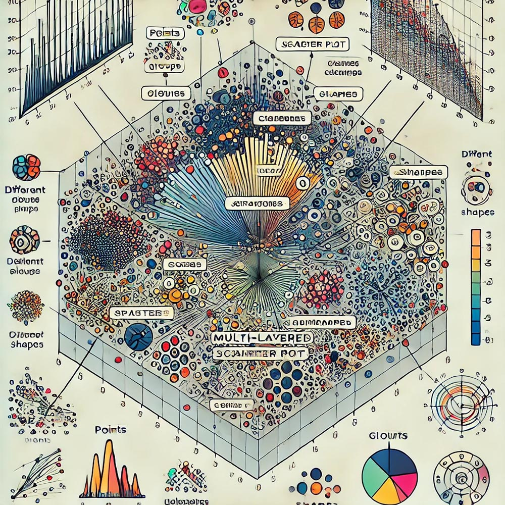
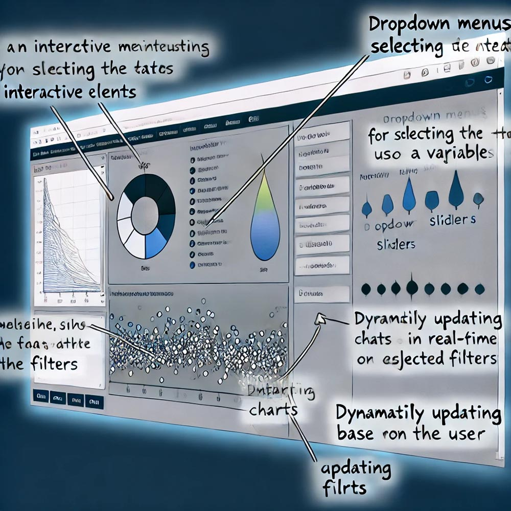
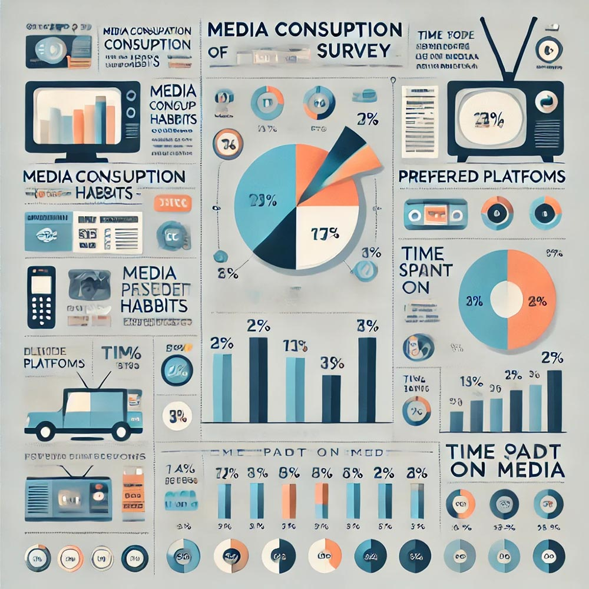
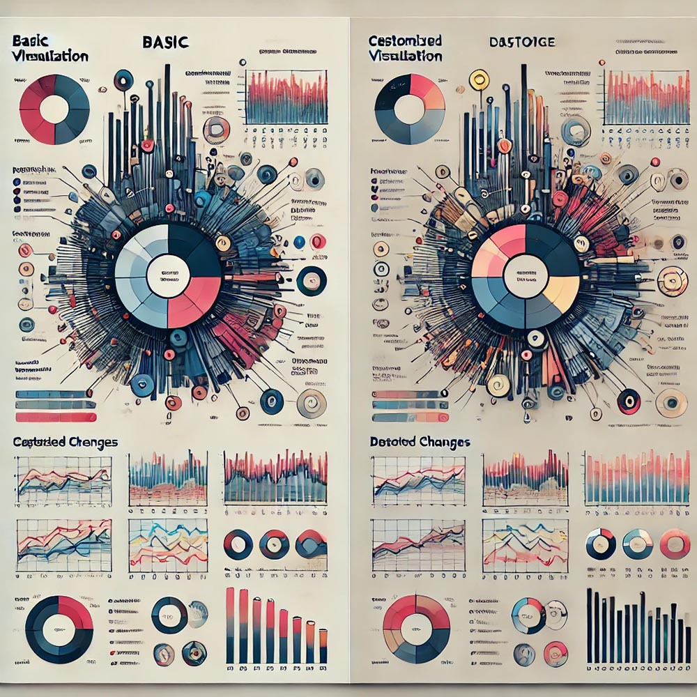
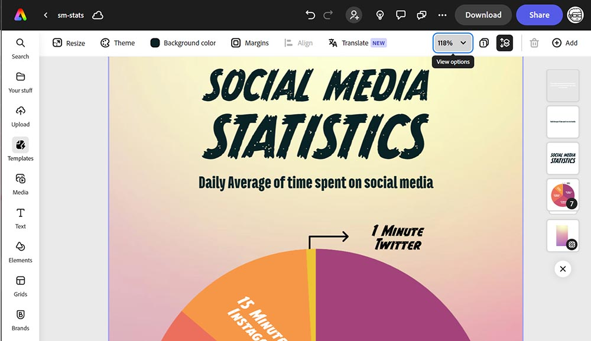

Chapter 11 Data Visualization in R
11.1 Introduction to Data Visualization
In the field of mass communications research, where the analysis often spans complex datasets ranging from audience demographics to social media engagement metrics, data visualization plays a crucial role. It transforms raw data into understandable and insightful visual formats, enabling researchers to uncover patterns, trends, and anomalies that might not be apparent from numbers alone. This section highlights the importance of data visualization in mass communications research and provides an overview of the extensive data visualization capabilities available in R, making it an indispensable tool for researchers aiming to convey their findings effectively.
The Importance of Data Visualization in Mass Communications Research
Enhancing Understanding: Data visualization helps in simplifying complex datasets, making the information more accessible and understandable to a broad audience, including those without a statistical background.
Facilitating Insight: Visual representations of data can highlight underlying patterns and trends, reveal relationships between variables, and pinpoint outliers, offering valuable insights that can guide further research and decision-making.
Improving Communication: In mass communications, where findings often inform policy, strategy, and content creation, effectively communicated visualizations can influence and engage stakeholders, from policymakers to the general public.
Supporting Analysis: Beyond its role in communication, visualization is a critical part of the exploratory data analysis process, helping researchers to identify potential areas of interest, formulate hypotheses, and select appropriate statistical tests.
Overview of Data Visualization Capabilities in R
Versatile Plotting Functions: R provides a wide array of plotting functions for creating diverse types of visualizations, from basic histograms and scatter plots to complex multi-layered graphics. The base R graphics, while powerful, are further enhanced by packages like
ggplot2, which offers a high-level interface for creating aesthetically pleasing and complex visualizations.Customization and Flexibility: One of R’s strengths lies in its high degree of customization, allowing researchers to tailor their visualizations to meet specific needs. From adjusting colors and fonts to fine-tuning scales and themes, R enables the creation of publication-quality figures.
Interactive Visualizations: For more dynamic and engaging presentations, R supports interactive visualization through packages like
plotlyandshiny. These tools allow users to interact with the data, exploring different facets and drilling down into specifics, which can be particularly useful for online dissemination.Integration with R Markdown: R’s integration with R Markdown facilitates the seamless inclusion of visualizations in reproducible reports and presentations. Researchers can combine code, output, and narrative text in a single document, ensuring that the visualizations are directly linked to the underlying analysis.
Extensive Community Resources: The vibrant R community continuously contributes to the development of new visualization packages and tools, expanding the possibilities for creative and informative data presentation. Resources such as tutorials, webinars, and forums provide ongoing support for researchers looking to enhance their visualization skills.
Data visualization in R offers mass communications researchers the tools to not only analyze and understand their data but also to communicate their findings compellingly. By leveraging R’s extensive visualization capabilities, researchers can illuminate the stories hidden within their data, making a significant impact on both academic and public discourse.
11.2 Visualization Techniques
As you advance in your understanding of data visualization, it’s essential to move beyond basic charts and graphs to more sophisticated tools that allow for greater customization and interactivity. This section introduces you to advanced visualization techniques, focusing on the use of ggplot2 and interactive visualizations, which are powerful tools for creating more nuanced and user-engaging data displays.
ggplot2 is a widely-used package in R that enables the creation of complex and customized visualizations. Unlike basic plotting functions, ggplot2 operates on the principle of “The Grammar of Graphics,” which allows you to build plots layer by layer. This approach not only gives you more control over the visual aspects of your data but also makes it easier to create multi-faceted and detailed visualizations. For example, you can use ggplot2 to create a multi-layered scatter plot where different groups in your data are represented by various colors and shapes. This type of visualization is particularly useful when you need to highlight relationships or differences between multiple variables simultaneously.
To get started with ggplot2, you will be guided through a step-by-step process. We will begin with basic plots, such as simple scatter plots or bar charts, and gradually introduce more complex features like faceting, theming, and layering. Faceting allows you to create multiple plots based on a factor variable, while theming enables you to customize the overall appearance of your plots to match specific aesthetic requirements. This flexibility makes ggplot2 an indispensable tool for creating visualizations that are both informative and visually appealing.

Figure 076. A multi-layered scatter plot created using ggplot2, with annotations highlighting the different layers (e.g., points, colors, shapes) and explaining how each layer contributes to the overall visualization. This visual will help students understand the modular approach of ggplot2 and how to build complex plots by adding layers.
As part of your learning, you will be assigned a project to create a customized plot using ggplot2. This project will encourage you to incorporate multiple variables and aesthetic elements, allowing you to explore the full capabilities of ggplot2. We will also discuss how the grammar of graphics framework in ggplot2 facilitates the creation of flexible and sophisticated visualizations tailored to specific research needs.
Another critical aspect of advanced data visualization is the use of Interactive Visualizations. These visualizations go beyond static images, allowing users to engage with the data by interacting with the visual elements. For instance, you might create an interactive dashboard using R Shiny that enables users to filter and view data based on different criteria, such as selecting a specific time range or focusing on a particular subgroup within your dataset. This interactivity can be particularly valuable in exploratory data analysis, where the ability to explore data from multiple angles can lead to deeper insights.
We will introduce the concept of interactive visualizations by discussing their advantages, particularly in making data more accessible and engaging for your audience. Interactive visualizations allow users to explore data on their own terms, leading to a more personalized and impactful understanding of the information presented.

Figure 077. A screenshot of an interactive dashboard created in R Shiny, showing how users can filter data and update the visualizations in real-time. Annotations should explain the different interactive elements, such as dropdown menus, sliders, and dynamically updating charts, to illustrate the added value of interactivity in data exploration.
To help you develop these skills, we will demonstrate how to create simple interactive plots using tools like plotly in R or the built-in interactive features in jamovi. You will then be assigned a task to develop an interactive visualization based on a dataset, focusing on both usability and the insights that users can gain through their interactions with the data. This exercise will challenge you to think critically about how to design interactive elements that enhance the user experience and effectively communicate your data’s story.
By mastering these advanced visualization techniques, including the use of ggplot2 and interactive tools, you will be well-equipped to create data visualizations that not only convey complex information but also engage your audience in meaningful ways. These skills are essential for any researcher looking to present their data compellingly and accessibly.
Creating Infographics
Infographics are a powerful tool for summarizing and presenting complex information in a way that is visually appealing and easy to understand. By combining data with visual design elements, infographics can quickly convey key messages, making them an essential skill for any researcher looking to communicate their findings effectively. In this section, we will explore the principles of designing effective infographics, customizing visualizations to match specific needs, and using tools like Adobe Express to bring your designs to life.
Designing Infographics is about more than just placing data on a page—it’s about telling a story. When creating an infographic, your goal should be to distill complex information into a clear, concise, and engaging format. This involves making strategic decisions about what data to include, how to organize it, and how to visually represent it. For example, imagine you need to create an infographic that summarizes the key findings from a media consumption survey. The challenge is to present the data in a way that highlights the most important insights without overwhelming the viewer.
To achieve this, you should follow several principles of good infographic design. Clarity is paramount; your infographic should communicate its message at a glance. This means avoiding clutter, using simple language, and ensuring that your visual elements are easy to interpret. Simplicity is also crucial—select a clean, minimalistic layout that helps guide the viewer’s eye through the information logically and intuitively. Additionally, the effective use of color and space can make a significant difference in how your infographic is perceived. Colors should not only make the infographic visually appealing but also help differentiate between different sections or data points. Similarly, strategic use of white space can help prevent the design from feeling crowded and can make the content easier to read.

Figure 078. An example infographic that summarizes the results of a media consumption survey. The infographic should include clear headings, well-organized data points, simple icons or charts, and a consistent color scheme. Annotations can point out how clarity, simplicity, and effective use of color contribute to the overall effectiveness of the design.
Once you understand these principles, tools like Adobe Express or Canva can be incredibly helpful in bringing your designs to life. These platforms provide pre-designed templates and user-friendly interfaces that allow you to focus on the content and design of your infographic without needing extensive graphic design skills. In class, we will demonstrate how to use these tools to create professional-looking infographics. You will then be assigned a project where you will design an infographic based on the results of a research project, emphasizing the importance of visual storytelling and the balance between text and visuals.
Customizing visualizations is another essential aspect of effective data communication. Customization involves tailoring the appearance and elements of a visualization to better match the data’s message and the intended audience. For example, you might need to adjust the color schemes and fonts in a ggplot2 plot to align with a publication’s style guidelines or to make the visualization more accessible to a broader audience. Customization can significantly enhance the effectiveness of your data visualizations, helping to ensure that your message is clear and impactful.

Figure 079. A side-by-side comparison of two visualizations of the same dataset—one basic and the other customized. The customized version should demonstrate improved clarity, aesthetic appeal, and alignment with the intended message. Annotations should explain the specific changes made, such as color adjustments, font changes, and layout refinements, and how they improve the visualization.
In the classroom, we will explore examples of how customization can enhance the effectiveness of data visualizations. You will engage in exercises where you customize your plots using tools like ggplot2 or other visualization software. We will discuss how different design choices—such as color palettes, fonts, and layout—affect the interpretation of the data. Additionally, we will cover important considerations for accessibility, such as choosing colorblind-friendly palettes and ensuring clear labeling, which are crucial for making your visualizations inclusive and understandable to all viewers.
Finally, Adobe Express is introduced as a practical tool for creating infographics and other visual content. Adobe Express offers a range of pre-designed templates and easy customization options, making it accessible to non-designers. For instance, you might use Adobe Express to create an infographic that summarizes a study’s key findings. The platform’s drag-and-drop interface allows you to experiment with different layouts, colors, and fonts, making it easier to design visually compelling infographics without the need for advanced design skills.

Figure 080. A screenshot of the Adobe Express interface, showing a user creating an infographic. The image should highlight the drag-and-drop functionality, template options, and customization tools available in Adobe Express. Annotations can explain how these features help streamline the design process for users of all skill levels.
In class, we will walk through the features of Adobe Express, highlighting how it simplifies the design process. You will then be tasked with creating your own infographic using Adobe Express, experimenting with different templates and customization options. This exercise will not only help you develop your design skills but also reinforce the importance of visual hierarchy and aesthetics in enhancing the impact of your research findings.
By mastering the art of creating infographics and customizing visualizations, you will be equipped to present your research in a way that is both visually appealing and highly effective in communicating complex information. These skills are invaluable for any researcher aiming to engage and inform their audience through data.
11.3 Getting Started with ggplot2
In the realm of data visualization within R, ggplot2 stands out as a premier package, offering a powerful and flexible system for creating graphics. Developed by Hadley Wickham, ggplot2 is based on the Grammar of Graphics—a set of principles for creating consistent and comprehensible visualizations. This section introduces ggplot2, delves into the basic concepts of the Grammar of Graphics, and guides you through setting up RStudio and installing ggplot2, paving the way for producing sophisticated and insightful visualizations in your mass communications research.
Introduction to ggplot2
ggplot2 is a comprehensive visualization package that transforms the way researchers create graphics in R. Its popularity stems not only from the aesthetic appeal and versatility of the visualizations it can produce but also from its underlying philosophy—the Grammar of Graphics—which emphasizes clarity, consistency, and coherence in data representation.
Basic Concepts of the Grammar of Graphics
The Grammar of Graphics, as implemented by ggplot2, is a systematic approach to visualization that allows users to construct graphics layer by layer by specifying the fundamental components of a graphic:
- Data: The dataset being visualized, specified using the
dataargument. - Aesthetics (aes): Aesthetic mappings describe how variables in the data are mapped to visual properties (aesthetics) of the graphic, such as position, color, and size.
- Geometries (geom): Geometric objects (geoms) represent what you actually see on the plot: points, lines, bars, etc. Different
geomfunctions are used to create different types of visualizations. - Scales: Scales control how data values are translated into visual properties.
ggplot2automatically chooses suitable scales, but you can customize them to change the appearance of the plot. - Facets: Faceting allows for the creation of subplots that split the data into subsets based on the values of one or more variables.
- Themes: Themes control the non-data parts of the plot, such as the background, gridlines, and text elements, allowing for extensive customization of the plot’s appearance.
Setting Up RStudio and Installing ggplot2
To begin creating visualizations with ggplot2, you’ll first need to set up your RStudio environment and install the package:
- Installing ggplot2:
ggplot2can be installed from CRAN (the Comprehensive R Archive Network). Open RStudio and use the following command in the console:
- Loading ggplot2: Before using
ggplot2, you must load it into your R session. This is done with thelibrary()function:
With RStudio set up and ggplot2 installed, you’re now ready to dive into creating compelling and informative visualizations. ggplot2’s adherence to the Grammar of Graphics not only makes your plots more effective in conveying your research findings but also ensures that the process of creating them is logical and systematic. Whether you’re visualizing survey results, audience metrics, or trends in media consumption, ggplot2 provides the tools you need to bring your data to life.
11.4 Plots
Prepare Workspace
Load Libraries
Tidyverse
We load the tidyverse package, which is a collection of R packages designed for data science.
Data.Table
Next, we load the data.table package. It provides an enhanced version of data frames for more efficient data manipulation.
Read in All of Your Data
We use the fread function from the data.table package to read in various datasets from URLs.
Anime Dataset This dataset presumably contains information related to anime.
anime <- fread("https://raw.githubusercontent.com/rfordatascience/tidytuesday/master/data/2019/2019-04-23/tidy_anime.csv")Horror Movies Dataset This dataset likely contains data related to horror movies.
horror_movies <- fread('https://raw.githubusercontent.com/rfordatascience/tidytuesday/master/data/2022/2022-11-01/horror_movies.csv')Richmond Way Dataset This dataset could contain information related to Richmond Way, though the exact details would be available in the dataset’s documentation.
richmondway <- fread('https://raw.githubusercontent.com/rfordatascience/tidytuesday/master/data/2023/2023-09-26/richmondway.csv')Television Ratings Dataset This dataset likely contains television ratings data.
television <- fread("https://raw.githubusercontent.com/rfordatascience/tidytuesday/master/data/2019/2019-01-08/IMDb_Economist_tv_ratings.csv")Video Games Dataset This dataset presumably contains information about video games.
Explain the data
Anime
Source: https://github.com/rfordatascience/tidytuesday/blob/master/data/2019/2019-04-23/readme.md
| variable | class | description |
|---|---|---|
| animeID | double | Anime ID (as in https://myanimelist.net/anime/animeID) |
| name | character | anime title - extracted from the site. |
| title_english | character | title in English (sometimes is different, sometimes is missing) |
| title_japanese | character | title in Japanese (if Anime is Chinese or Korean, the title, if available, in the respective language) |
| title_synonyms | character | other variants of the title |
| type | character | anime type (e.g. TV, Movie, OVA) |
| source | character | source of anime (i.e original, manga, game, music, visual novel etc.) |
| producers | character | producers |
| genre | character | genre |
| studio | character | studio |
| episodes | double | number of episodes |
| status | character | Aired or not aired |
| airing | logical | True/False is still airing |
| start_date | double | Start date (ymd) |
| end_date | double | End date (ymd) |
| duration | character | Per episode duration or entire duration, text string |
| rating | character | Age rating |
| score | double | Score (higher = better) |
| scored_by | double | Number of users that scored |
| rank | double | Rank - weight according to MyAnimeList formula |
| popularity | double | based on how many members/users have the respective anime in their list |
| members | double | number members that added this anime in their list |
| favorites | double | number members that favorites these in their list |
| synopsis | character | long string with anime synopsis |
| background | character | long string with production background and other things |
| premiered | character | anime premiered on season/year |
| broadcast | character | when is (regularly) broadcasted |
| related | character | dictionary: related animes, series, games etc. |
Horror Movies
Source: https://github.com/rfordatascience/tidytuesday/blob/master/data/2022/2022-11-01/readme.md
| Variable | Type | Definition | Example |
|---|---|---|---|
| id | int | unique movie id | 4488 |
| original_title | char | original movie title | Friday the 13th |
| title | char | movie title | Friday the 13th |
| original_language | char | movie language | en |
| overview | char | movie overview/desc | Camp counselors are stalked… |
| tagline | char | tagline | They were warned… |
| release_date | date | release date | 1980-05-09 |
| poster_path | char | image url | /HzrPn1gEHWixfMOvOehOTlHROo.jpg |
| popularity | num | popularity | 58.957 |
| vote_count | int | total votes | 2289 |
| vote_average | num | average rating | 6.4 |
| budget | int | movie budget | 550000 |
| revenue | int | movie revenue | 59754601 |
| runtime | int | movie runtime (min) | 95 |
| status | char | movie status | Released |
| genre_names | char | list of genre tags | Horror, Thriller |
| collection | num | collection id (nullable) | 9735 |
| collection_name | char | collection name (nullable) | Friday the 13th Collection |
Roy Kent F-ck count
| variable | class | description |
|---|---|---|
| Character | character | Character single value - Roy Kent |
| Episode_order | double | The order of the episodes from the first to the last |
| Season | double | The season 1, 2 or 3 associated with the count |
| Episode | double | The episode within the season associated with the count |
| Season_Episode | character | Season and episode as a combined variable |
| F_count_RK | double | Roy Kent’s F-ck count in that season and episode |
| F_count_total | double | Total F-ck count by all characters combined including Roy Kent in that season and episode |
| cum_rk_season | double | Roy Kent’s cumulative F-ck count within that season |
| cum_total_season | double | Cumulative total F-ck count by all characters combined including Roy Kent within that season |
| cum_rk_overall | double | Roy Kent’s cumulative F-ck count across all episodes and seasons until that episode |
| cum_total_overall | double | Cumulative total F-ck count by all characters combined including Roy Kent across all episodes and seasons until that episode |
| F_score | double | Roy Kent’s F-count divided by the total F-count in the episode |
| F_perc | double | F-score as percentage |
| Dating_flag | character | Flag of yes or no for whether during the episode Roy Kent was dating the characted Keeley |
| Coaching_flag | character | Flag of yes or no for whether during the episode Roy Kent was coaching the team |
| Imdb_rating | double | Imdb rating of that episode |
TV’s Golden Age
Source: https://github.com/rfordatascience/tidytuesday/blob/master/data/2019/2019-01-08/readme.md
| type | variable | missing | complete | n | min | max |
|---|---|---|---|---|---|---|
| character | genres | 0 | 2266 | 2266 | 5 | 25 |
| character | title | 0 | 2266 | 2266 | 1 | 51 |
| character | titleId | 0 | 2266 | 2266 | 9 | 9 |
| Date | date | 0 | 2266 | 2266 | 1990-01-03 | 2018-10-10 |
| integer | seasonNumber | 0 | 2266 | 2266 | NA | NA |
| numeric | av_rating | 0 | 2266 | 2266 | NA | NA |
| numeric | share | 0 | 2266 | 2266 | NA | NA |
Video Games
Source: https://github.com/rfordatascience/tidytuesday/blob/master/data/2019/2019-07-30/readme.md
| variable | class | description |
|---|---|---|
| number | double | Game number |
| game | character | Game Title |
| release_date | character | Release date |
| price | double | US Dollars + Cents |
| owners | character | Estimated number of people owning this game. |
| developer | character | Group that developed the game |
| publisher | character | Group that published the game |
| average_playtime | double | Average playtime in minutes |
| median_playtime | double | Median playtime in minutes |
| metascore | double | Metascore rating |
Components of ggplot2 in R
ggplot2 is a data visualization package in R that is part of the tidyverse. This package allows for layering of various graphic components to build complex visualizations.
Basic Syntax
The foundation of any ggplot is the ggplot() function, to which you can add different geoms (geometric objects) to visualize the data.
library(ggplot2)
ggplot(data = data_frame, aes(x = variable1, y = variable2)) + geom_point()In this line, data_frame is the dataset being visualized, aes() is the function to map variables to aesthetic attributes, and geom_point() adds points to the plot for each combination of x and y values.
Aesthetic Mappings (aes)
The aes() function allows you to map variables in your dataset to aesthetic attributes like x-position, y-position, color, fill, and transparency (alpha).
ggplot(data = data_frame, aes(x = variable1, y = variable2, color = variable3)) + geom_point()Here, variable3 is mapped to the color aesthetic, resulting in points with colors that reflect the value of variable3.
Labs (Labels)
The labs() function is used to customize or add labels to the ggplot, such as the title and axis labels.
ggplot(data_frame, aes(x = variable1, y = variable2)) + geom_point() + labs(title = "My Plot", x = "X-Axis", y = "Y-Axis")Pre-Made Themes
ggplot2 comes with several pre-made themes like theme_minimal() and theme_light() that can be easily applied to a plot.
ggplot(data_frame, aes(x = variable1)) + geom_histogram() + theme_light()Customizing Themes
For more control over the look of your plot, you can use the theme() function and specify various elements.
ggplot(data_frame, aes(x = variable1)) + geom_histogram() + theme(axis.text.x = element_text(angle = 45))Color Schemes
To set or customize color schemes, you can use scale_color_* and scale_fill_* functions.
ggplot(data_frame, aes(x = variable1, fill = variable2)) + geom_histogram() + scale_fill_brewer(palette = "Blues")Binwidth
In histograms, the binwidth parameter specifies the width of each bin.
ggplot(data_frame, aes(x = variable1)) + geom_histogram(binwidth = 5)Legends
Legends in ggplot2 are usually generated automatically but can be customized using the guides() function or directly within scale_* functions.
ggplot(data_frame, aes(x = variable1, color = variable2)) + geom_point() + guides(color = guide_legend("Legend Title"))This allows you to change the title of the legend from the default to “Legend Title.”
Distribution Plots
This section covers various types of distribution plots including histograms, density plots, violin plots, and boxplots.
Histogram
A histogram is a graphical representation that organizes a group of data points into specified ranges. It is an estimate of the probability distribution of a continuous variable. Histograms are effective in visualizing the frequency distribution of continuous data sets. By grouping data into intervals, histograms provide a clear picture of the distribution’s shape and the prevalence of data points within specific ranges. The data is partitioned into bins, and the number of data points in each bin is represented by the height of the corresponding bar (Wickham, 2016). Here, we are using the richmondway dataset to examine the frequency distribution of “F-ck Count” by the character Roy Kent.
Density Plot
Density plots visualize the distribution of a continuous variable over a continuous range. Unlike histograms, these plots are smooth, which makes them suitable for estimating the probability density function of the underlying variable (Silverman, 1986). In this example, we will be using the horror_movies dataset to visualize the density of movie ratings.
Find the 5 Most Popular Languages
First, let’s find out which languages are the most popular in the dataset.
Violin Plot
Violin plots combine features of boxplots and density plots to show the distribution, median, and interquartile range of the data. They are particularly useful for comparing the distributions of multiple categories in a dataset (Hintze & Nelson, 1998). Here, we use the video_games dataset to visualize the average metascores for the top 5 publishers.
Create Violin Plot
After filtering for the top 5 publishers, we generate the violin plot.
video_games_top_5_publishers <- video_games %>%
filter(publisher %in% c("Big Fish Games", "SEGA", "Strategy First", "Ubisoft", "Square Enix"))
ggplot(video_games_top_5_publishers, aes(x = publisher, y = metascore)) +
geom_violin() +
labs(title = "Violin Plot of Average Metascore by Top 5 Publisher",
x = "Publisher",
y = "Average Metascore")Boxplot
A boxplot provides a graphical representation of the central tendency and spread of a dataset, depicting the median, quartiles, and potential outliers. Boxplots are useful for identifying skewness and outliers in the data (Tukey, 1977). We’ll use the anime dataset to explore how scores are distributed across different types of anime.
Correlation Plots
This section focuses on the use of correlation plots including scatter plots, heatmaps, and bubble plots.
Scatter Plot
Scatter plots are particularly adept at demonstrating the relationship between two quantitative variables. By plotting data points on a two-dimensional graph, they allow for the observation of patterns or correlations within the data. A scatter plot utilizes Cartesian coordinates to display values of two variables, one plotted along the x-axis and the other plotted along the y-axis. It is commonly used to observe and show relationships between two numeric variables (Cleveland, 1994). In this example, we are using the richmondway dataset.
Connected Scatter Plot
A connected scatter plot combines elements of both scatter and line plots to visualize the relationship between two variables while emphasizing the sequence or progression of data points. Unlike a traditional scatter plot that only displays individual data points, a connected scatter plot links these points with lines, highlighting the order or trend of the data. This method is particularly useful when tracking the progression of two variables in relation to each other over time or categories, and it can reveal patterns that might not be evident in a standard scatter plot. A line plot, on the other hand, typically focuses on showing a trend or change in a single variable over time or categories and is more straightforward in depicting time series data. Line plots are invaluable in data visualization for their ability to illustrate trends and changes over time. The connection of data points with a line makes it straightforward to track progressions or declines within the dataset.
In the following example, we will use the richmondway dataset to create a connected scatter plot. The aim is to plot the average F_count_total for each season, showing how this average changes from one season to the next.
Average F_count_total by Season
First, we need to compute the average F_count_total for each season. This will ensure that each season is represented by a single data point in the plot.
Create Connected Scatter Plot
Now, we create the connected scatter plot using ggplot2. This plot will show the average F_count_total for each season and connect these averages to illustrate the trend over the seasons.
ggplot(richmondway_avg, aes(x = Season, y = Avg_F_count)) +
geom_point(aes(color = Season), size = 3) +
geom_line(aes(group = 1), color = "blue") +
theme_minimal() +
labs(title = "Average F-ck Count Across Seasons",
x = "Season",
y = "Average Total F-ck Count")In this connected scatter plot, each point represents the average total count of a particular term (in this case, “F-ck Count”) for a season. The lines connecting these points demonstrate the progression or trend of this average over the seasons, providing a clear visualization of how the average count changes from one season to the next. The use of different colors for each season can further aid in distinguishing the data points, enhancing the overall understanding of the trends displayed.
Heatmap
A heatmap is a data visualization technique that represents the magnitude of observations as color in a two-dimensional plane. This plot is often used to understand complex data structures and correlations between multiple variables (Wilkinson & Friendly, 2009). In this example, we use the horror_movies dataset.
Bubble Plot
A bubble plot is an extension of the scatter plot, where a third dimension of data is added through the size of the bubbles. This allows for the simultaneous comparison of three variables (Cleveland, 1994). We use the video_games dataset in this example.
11.4.0.0.1 Remove Free Titles and Titles with Missing Data
First, we remove the rows with missing values and rows where any column has a 0 value.
Ranking Plots
This section will cover the creation of ranking plots, specifically bar plots and lollipop plots.
Bar Plot
Bar plots represent categorical data with rectangular bars where the lengths are proportional to the counts or values they represent. Bar plots can be oriented horizontally or vertically and are useful for comparing quantities across categories (Wickham, 2016). Bar plots are preferred over line plots when the goal is to compare discrete categories or distinct groups. The segmented nature of bar plots makes them ideal for highlighting differences between items without implying a continuous sequence.
Identify Top Anime Producers
In this code snippet, we identify the top anime producers in the anime dataset.
Create a New Data Frame for Just the Top Five Producers
Here we filter the anime data to only include records from the top five producers.
Create New Data Frame with the Average Score by Producer
We then calculate the average score by producer. Note the use of na.rm = TRUE to remove NA values for an accurate mean.
Lollipop Plot
A lollipop plot combines elements of bar plots and scatter plots to represent values of different categories. It consists of a stem (akin to the bar in a bar plot) and a dot (akin to the point in a scatter plot) at the end of the stem to signify the value (Tufte, 2001).
Separate Genres into New Rows
Assuming television is your original dataset, this code separates each genre into a new row.
Create New Data Frame for Just the Top 10 Genres
Here we filter the data to only include records from the top 10 genres.
Part of a Whole
This section will cover various methods for depicting part-of-a-whole relationships in data visualization, including pie charts, grouped and stacked bar plots, and treemaps.
Pie Chart
A pie chart is a circular chart that divides data into slices to illustrate numerical proportion. Each slice represents a part-to-whole relationship (Bertin, 1983).
Grouped + Stacked Barplot
Create Grouped Barplot
A grouped barplot represents categorical data with multiple sub-categories. It uses adjacent bars to represent the different sub-categories within each primary category, facilitating direct comparison (Wickham, 2016). A grouped bar plot is created to show both average rating and share for each genre of television show.
Create Stacked Barplot
A stacked barplot is similar to a standard bar plot but divides each bar into multiple sub-categories. This allows for the representation of part-to-whole relationships within each category (Wickham, 2016). A stacked bar plot is created to show both popularity and rating of horror movies by original language.
Treemap
Dataset: Horror Movies
A treemap displays hierarchical data as a set of nested rectangles. Each level in the hierarchy is represented by a colored rectangle (‘branch’), which is then sub-divided into smaller rectangles (‘leaves’) (Shneiderman, 1992). A treemap is created to visualize the vote count by original language for horror movies.
Store and Edit Plots
Filter data for unique show titles
tv_top_genres_list <- long_television %>%
distinct(title, genres, .keep_all = TRUE) %>%
group_by(genres) %>%
count() %>%
arrange(desc(n)) %>%
ungroup() %>%
top_n(10, wt = n)
tv_top_genres_listYou can store a plot into your environment for easier recall.
tv_genres_bar <- ggplot(tv_top_genres_list, aes(x = reorder(genres, -n), y = n)) +
geom_bar(stat = "identity") +
labs(title = "Bar Plot of Show Count by Major Genre",
x = "Genres",
y = "Number of shows")A stored plot can be added to without having to type out all of the code if it is previously stored in the environment.
First load package with unique themes
Add to your stored plot
Saving Plots in R Markdown
Once you’ve generated and refined your plot, it’s crucial to understand how to save it for further use, whether for presentation, publication, or collaboration. R Markdown, together with the ggplot2 library, offers flexible ways to save your plots in various formats.
Saving Plots Directly in R Markdown
Store plot you want to save locally.
The above chunk will save the plot in the specified directory with the name “plot_name” followed by a figure number (e.g., “plot_name1.png”).
Saving Plots Using ggsave()
The ggsave() function, which comes with the ggplot2 library, provides a straightforward way to save the last plot that you created. Below are the steps and explanations:
- PNG Format: Suitable for web applications.
- JPEG Format: Generally used for photographs on the web, but it’s lossy, meaning some image quality is compromised.
- PDF Format: Perfect for publications and where high quality is paramount. It retains the quality regardless of how much you zoom.
- SVG Format: A vector format suitable for web applications where scalability without loss of resolution is important.
11.5 Designing Infographics in R
Infographics are a powerful tool for synthesizing complex information into engaging, easily digestible visual formats, making them particularly valuable in mass communications research for conveying key findings and insights to a broad audience. R, known for its statistical and graphical prowess, offers a suite of tools and packages that can be leveraged to create compelling infographics. This section explores the value of infographics in communicating research findings, introduces R tools and packages suited for infographic creation, and provides tips for effective infographic design.
11.5.1 Overview of Infographics and Their Value in Communicating Research Findings
What Are Infographics? Infographics combine graphics, data, and text to tell a story or present information in a visually engaging way. They can simplify complex concepts, highlight key findings, and make data accessible to audiences who may not have a technical background.
Value in Research Communication: In mass communications research, infographics can serve as an effective medium for sharing research outcomes with practitioners, policymakers, and the public, facilitating a broader impact and fostering informed discussions.
11.5.2 Tools and Packages in R for Creating Infographics
ggplot2 for Base Graphics: The
ggplot2package is a versatile tool for creating a wide range of plots and charts that can serve as the foundation for infographics. Its layer-based approach allows for detailed customization of graphical elements.ggiraph for Interactivity: The
ggiraphpackage extendsggplot2by adding interactivity to the plots, such as tooltips and clickable elements, making the infographics more engaging and informative.
library(ggiraph)
gg <- ggplot(data, aes(x = variable1, y = variable2, tooltip = variable3)) +
geom_point_interactive()
girafe(ggobj = gg)- patchwork for Layout Design: The
patchworkpackage enables the combination of multipleggplot2plots into a cohesive layout, a useful feature for assembling various components of an infographic.
library(patchwork)
plot1 + plot2 + plot_layout(ncol = 1)- Other Helpful Packages: Packages like
gridExtraandcowplotcan also assist in arranging plots and graphical elements, whileRMarkdownandshinycan be used to create dynamic and interactive web-based infographics.
11.5.3 Tips for Effective Infographic Design
Simplicity: Aim for a clean and uncluttered design that focuses on key messages. Use space effectively to guide the viewer’s attention to the most important information.
Readability: Choose fonts and colors that enhance readability. Text should be concise and informative, complementing the visual elements without overwhelming them.
Engagement: Incorporate elements that encourage viewer interaction or reflection. This could include questions, prompts for further exploration, or interactive features in web-based infographics.
Consistency: Maintain consistent use of colors, fonts, and styles throughout the infographic to create a cohesive visual narrative.
Accessibility: Consider accessibility by ensuring that color choices are distinguishable for color-blind individuals and that text is sufficiently large to be easily readable.
Designing infographics in R combines the software’s robust data handling and graphical capabilities with creative design principles, enabling researchers in mass communications and beyond to share their findings in an impactful and accessible manner. By adhering to best practices in infographic design and utilizing the appropriate R tools and packages, researchers can enhance the dissemination and impact of their work, reaching wider and more diverse audiences.
11.6 Advanced Visualization Techniques
In mass communications research, advanced visualization techniques are essential for exploring and presenting complex relationships within datasets. From visualizing the intricacies of multiple linear regressions to mapping out network data or geographical distributions, R offers a powerful toolkit for creating sophisticated visual representations. This section delves into various advanced visualization techniques, including visualizing multiple linear regressions, creating heat maps and correlation plots, and introducing network diagrams and maps, all within the R environment.
11.6.1 Visualizing Multiple Linear Regressions
Understanding Multiple Linear Regressions: Multiple linear regression is a statistical technique that models the relationship between a dependent variable and two or more independent variables. It allows researchers to assess the impact of each predictor while controlling for the effects of others.
Techniques for Visualizing Regression Models and Their Interactions:
ggplot2for Model Visualizations: Useggplot2to create scatter plots with regression lines or to plot residuals to assess model fit.
library(ggplot2)
model <- lm(dependent_variable ~ predictor1 + predictor2, data = dataset)
ggplot(dataset, aes(x = predictor1, y = dependent_variable)) +
geom_point() +
geom_smooth(method = "lm", se = FALSE)- **Plotting Interactions:** Visualize interactions between predictors by creating interaction plots, which can highlight how the effect of one variable depends on the level of another.interaction.plot(dataset$predictor1, dataset$predictor2, model$fitted.values,
legend = TRUE)11.6.2 Heat Maps and Correlation Plots
- Creating Heat Maps: Heat maps are a useful tool for visualizing complex datasets, including correlation matrices. They use color gradients to represent the magnitude of values, making it easy to identify patterns or areas of interest.
library(ggplot2)
library(reshape2)
data_matrix <- cor(dataset)
melted_data <- melt(data_matrix)
ggplot(melted_data, aes(Var1, Var2, fill = value)) +
geom_tile() +
scale_fill_gradient2(low = "blue", high = "red", mid = "white",
midpoint = 0, limit = c(-1,1), space = "Lab",
name="Correlation") +
theme_minimal() +
theme(axis.text.x = element_text(angle = 45, hjust = 1))11.6.3 Network Diagrams and Maps
- Visualizing Network Data: Network diagrams are essential for representing relationships between entities, such as social media interactions or organizational structures. The
igraphpackage in R facilitates the creation and visualization of network graphs.
library(igraph)
network <- graph_from_data_frame(d=edges, vertices=nodes)
plot(network)- Introduction to Geographical Information: For visualizing geographical data, such as the distribution of media outlets or audience demographics across regions, the
ggplot2package, along with extensions likeggmap, provides tools for mapping data.
library(ggplot2)
library(ggmap)
map_data <- get_map(location = 'United States', zoom = 4)
ggmap(map_data) +
geom_point(aes(x = long, y = lat, color = variable, size = value), data = geo_data) +
scale_color_gradient(low = "yellow", high = "red") +
theme(legend.position = "bottom")Advanced visualization techniques in R empower mass communications researchers to uncover and communicate complex patterns and relationships within their data. By effectively applying these techniques, researchers can provide deeper insights into their studies, making their findings more accessible and impactful. Whether through detailed regression analyses, heat maps of correlation matrices, network diagrams, or geographical mappings, R’s extensive visualization capabilities are an invaluable asset in the researcher’s toolkit.
11.7 Customizing Visualizations in R
The ability to customize visualizations in R is one of its most powerful features, allowing researchers in mass communications and beyond to refine their plots for clarity, impact, and audience engagement. Through customization, visualizations can be tailored to convey the intended message more effectively, making complex data more accessible and interpretable. This section covers key aspects of customizing plot aesthetics in R, including themes, colors, and fonts, adding annotations and labels for enhanced understanding, and adjusting plot dimensions for publication and presentations.
11.7.1 Customizing Plot Aesthetics: Themes, Colors, and Fonts
- Themes: The
ggplot2package offers several built-in themes (e.g.,theme_minimal(),theme_light()) that can be applied to any plot for instant changes to its appearance. For more control, thetheme()function allows you to modify specific components of the plot, such as text, background, gridlines, and legend.
ggplot(data, aes(x = variable1, y = variable2)) +
geom_point() +
theme_minimal() +
theme(text = element_text(family = "Arial", size = 12),
legend.position = "top")- Colors: Colors play a crucial role in data visualization, enhancing differentiation and readability.
ggplot2enables color customization at various levels, from individual points to entire plots. Thescale_color_manual()function is particularly useful for specifying custom color palettes.
ggplot(data, aes(x = variable, fill = category)) +
geom_bar() +
scale_fill_manual(values = c("blue", "green", "red"))- Fonts: Adjusting font family, size, and style can significantly improve a plot’s readability and aesthetic appeal. While
ggplot2’stheme()function allows for broad font adjustments, theextrafontpackage can be used to incorporate a wider range of fonts.
library(extrafont)
ggplot(data, aes(x = variable1, y = variable2)) +
geom_point() +
theme(text = element_text(family = "Times New Roman", size = 14))11.7.2 Adding Annotations and Labels to Enhance Understanding
- Annotations: Adding text annotations or highlighting specific data points can draw attention to key findings or explain unusual patterns. The
annotate()function is versatile, allowing for the inclusion of text, lines, and shapes.
ggplot(data, aes(x = date, y = value)) +
geom_line() +
annotate("text", x = specific_date, y = specific_value, label = "Note", size = 5)- Labels: Clear and descriptive labels for axes, titles, and legends are essential for understanding a plot. The
labs()function provides a simple way to customize these elements, improving the communicative value of the visualization.
ggplot(data, aes(x = variable1, y = variable2)) +
geom_point() +
labs(title = "Title of the Plot", x = "X-axis Label", y = "Y-axis Label", color = "Legend Title")11.7.3 Adjusting Plot Dimensions and Exporting for Publication and Presentations
- Adjusting Dimensions: The size and aspect ratio of a plot can impact its presentation and readability. Adjusting plot dimensions is crucial, especially when preparing visualizations for publication or presentations. The
ggsave()function allows you to specify dimensions and resolution when saving plots.
ggsave("plot.png", plot = last_plot(), width = 8, height = 6, dpi = 300)- Exporting: R supports exporting visualizations in various formats, including PNG, PDF, and SVG, catering to different mediums and requirements. The choice of format can affect the quality and scalability of the visual output, with vector formats like PDF and SVG being preferred for print publications due to their scalability.
Customizing visualizations in R not only enhances the aesthetic appeal of plots but also improves their ability to communicate complex data effectively. By carefully adjusting themes, colors, fonts, and incorporating annotations and labels, researchers can create visually compelling and informative graphics that resonate with their audience. Adjusting dimensions and carefully selecting export formats further ensures that these visualizations meet the high standards required for publication and presentations, making them powerful tools for storytelling in mass communications research.
11.8 Interactive Visualizations with R
Interactive visualizations elevate the presentation and exploration of data by allowing users to engage directly with the information through dynamic charts, maps, and dashboards. In the context of mass communications research, where audience engagement and the dissemination of complex findings are paramount, interactive visualizations can play a critical role. R, with its comprehensive ecosystem, offers powerful packages like plotly and shiny for creating web-based interactive visualizations. This section introduces these tools, guides you through creating interactive charts and dashboards, and discusses the applications of interactive visualizations in mass communications research.
11.8.1 Introduction to Interactive Visualizations Using Packages like plotly and shiny
plotly:plotlyis a package that converts static plots created withggplot2or base R graphics into interactive web-based visualizations. It supports a wide array of chart types and interactivity features, such as tooltips, zooming, and filtering.
library(plotly)
p <- ggplot(data, aes(x = variable1, y = variable2)) + geom_point()
ggplotly(p)shiny:shinyis a framework for building interactive web applications directly from R. It allows for the development of comprehensive interactive dashboards that can include user inputs, dynamic outputs, and real-time data processing.
library(shiny)
ui <- fluidPage(
selectInput("variable", "Choose a variable:", choices = names(data)),
plotOutput("plot")
)
server <- function(input, output) {
output$plot <- renderPlot({
ggplot(data, aes_string(x = input$variable, y = "value")) + geom_point()
})
}
shinyApp(ui = ui, server = server)11.8.2 Creating Web-based Interactive Charts and Dashboards
Designing Interactive Charts: When designing interactive charts with
plotly, consider which interactive elements (e.g., hover information, clickable legends) will enhance the user’s understanding and exploration of the data.Building Interactive Dashboards with
shiny: Interactive dashboards typically combine multiple elements, including plots, tables, and user input controls. Planning the layout and functionality in advance can help create a more coherent and user-friendly experience.
11.8.3 Applications of Interactive Visualizations in Mass Communications Research
Audience Engagement Analysis: Interactive visualizations can be used to present data on audience engagement across different platforms, allowing users to explore variations by demographic factors, time, or content type.
Social Media Trend Exploration: Researchers can create dashboards that track and visualize social media trends, sentiment analysis, or network connections, offering insights into public opinion and media influence.
Media Content Analysis: Interactive charts can facilitate the exploration of media content analysis results, such as themes, frequencies, and associations within large datasets of textual or visual media content.
Educational Tools: For teaching mass communications concepts, interactive visualizations can serve as engaging educational tools, allowing students to explore data and understand the impact of different media phenomena.
Interactive visualizations in R, leveraging the capabilities of plotly and shiny, provide mass communications researchers with powerful tools to communicate complex data and insights in an engaging and accessible manner. By enabling audience interaction with the data, these visualizations not only enhance understanding but also encourage deeper exploration and engagement with the research findings.
11.9 Best Practices for Data Visualization
Data visualization is a powerful tool in mass communications research, offering a visual narrative to complement quantitative analyses. However, its effectiveness and integrity depend on adherence to ethical standards and best practices. This section outlines essential considerations for ethical data visualization, guidance for selecting appropriate visualization types, and strategies for effective storytelling with data.
11.9.1 Ethical Considerations in Data Visualization
Accuracy: Ensure that visualizations accurately represent the data without exaggeration or distortion. Misleading representations can not only erode trust but also lead to incorrect conclusions.
Non-deception: Avoid visual tricks that might mislead the viewer, such as manipulating axis scales or using inappropriate data representations that could alter the perceived significance or relationships within the data.
Accessibility: Design visualizations with all audiences in mind, including those with visual impairments. Use colorblind-friendly palettes and provide text descriptions or alt text for key visual elements to ensure broader accessibility.
11.9.2 Choosing the Right Type of Visualization for Your Data
Understand Your Data: Start by understanding the nature of your data (categorical, continuous, time-series, etc.) and the story you want to tell. Different data types and research questions require different visualization approaches.
Match Visualization to Your Objectives: Align your choice of visualization with your objectives. Use bar charts to compare quantities, line graphs for trends over time, scatter plots for relationships, and maps for geographical data.
Consider Your Audience: Tailor your visualization type to your audience’s needs and familiarity with data interpretation. Simplify complex visualizations or provide additional context for audiences less familiar with data analysis.
11.9.3 Storytelling with Data: Crafting a Narrative Around Your Visualizations
Start with a Clear Message: Identify the key message or insight you want to communicate through your visualization. This message should guide the design and presentation of your data.
Narrative Flow: Organize your visualizations in a logical sequence that guides the viewer through your analysis, building up to your key findings. Use titles, subtitles, and annotations to direct attention and explain the significance of each visualization.
Engage and Persuade: Use storytelling techniques to engage your audience emotionally and intellectually. Incorporate real-world implications, anecdotes, or hypothetical scenarios that relate the data to broader social or cultural contexts.
Feedback and Iteration: Share your visualizations with colleagues or your target audience for feedback. Use their insights to refine your visualizations and narrative for clarity, impact, and engagement.
Data visualization in mass communications research serves not just to illustrate quantitative findings but to communicate complex ideas and insights in an intuitive and compelling manner. By adhering to ethical standards, selecting appropriate visualization types, and effectively weaving a narrative around the data, researchers can enhance the impact of their work, fostering a deeper understanding and engagement among diverse audiences.